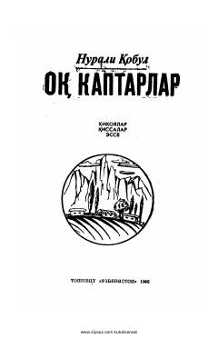

SBBolalik xotiralari va qishloq hayoti tasvirlangan ta'sirli qissa.
Ushbu asar inson va tabiat o'rtasidagi munosabatlar, bolalik xotiralari hamda sodiq uy hayvonlari haqida hikoya qiladi. Muallif bolalik davrining yorqin lahzalari va qishloq hayotining o'ziga xos manzaralarini ta'sirli til bilan tasvirlaydi.